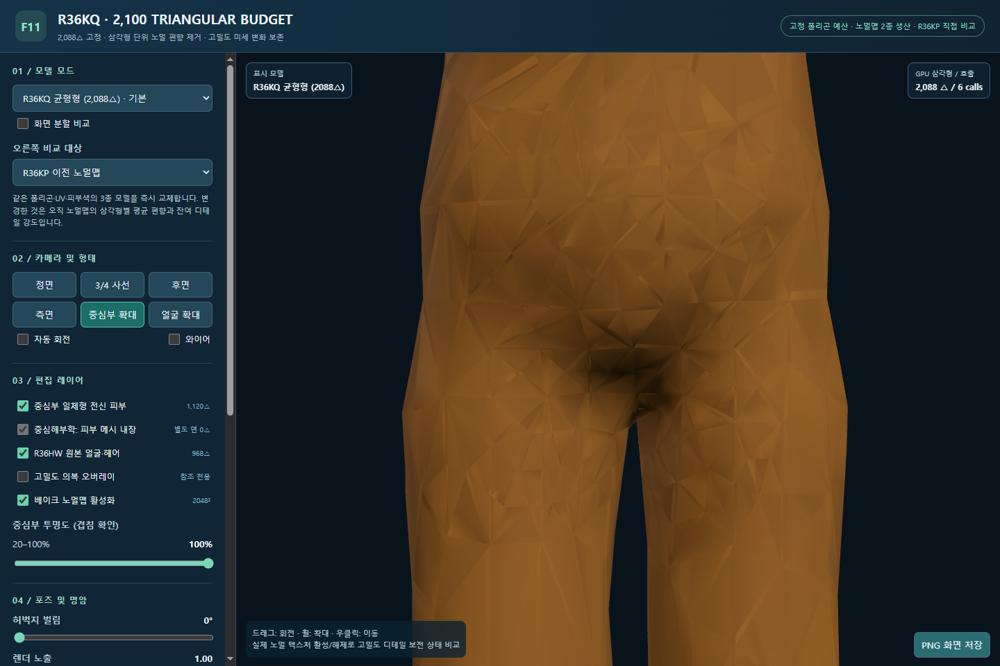
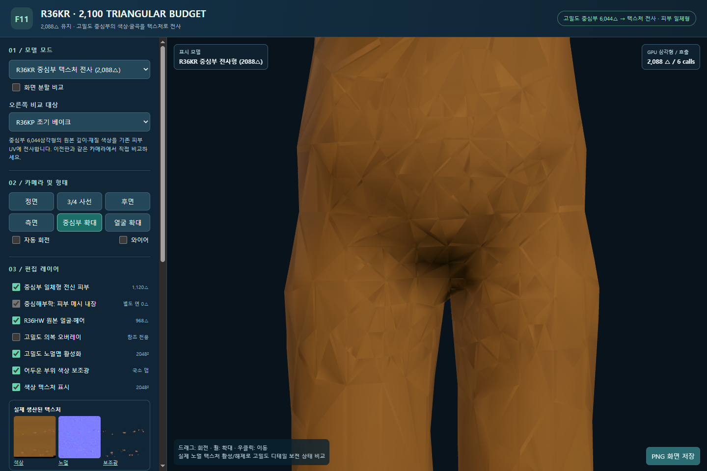
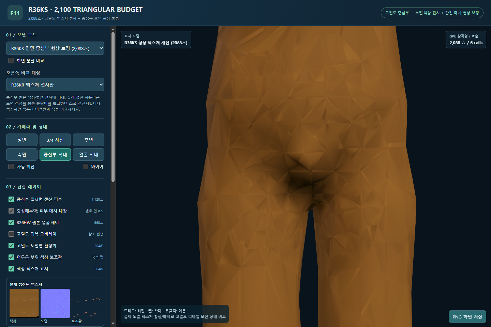
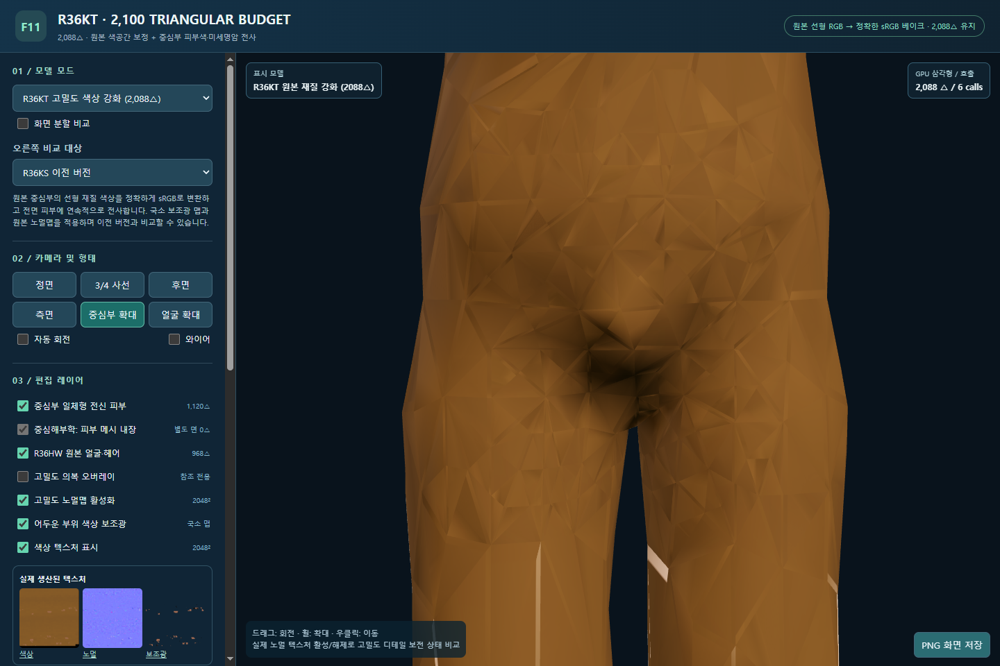

남은 문제: 검은 중심 틈은 실제 표면이 없는 공간과 깊은 자가 그림자가 포함되어 있습니다. 이를 텍스처만으로 완전히 수정했다고 주장하지 않습니다. 향후 새로 연결된 중심부 표면을 만드는 경우에도 전체 2,100삼각형 예산을 넘기지 않아야 합니다.
2,100삼각형 예산을 지키면서 실제 고밀도 모델의 색상과 표면 굴곡을 저폴리곤 모델에 옮기는 생산 기록입니다. 안정 기준 모델은 보존합니다.
모든 저폴리곤 후보 2,088△2048² 텍스처63본 피부 골격



남은 문제: 검은 중심 틈은 실제 표면이 없는 공간과 깊은 자가 그림자가 포함되어 있습니다. 이를 텍스처만으로 완전히 수정했다고 주장하지 않습니다. 향후 새로 연결된 중심부 표면을 만드는 경우에도 전체 2,100삼각형 예산을 넘기지 않아야 합니다.